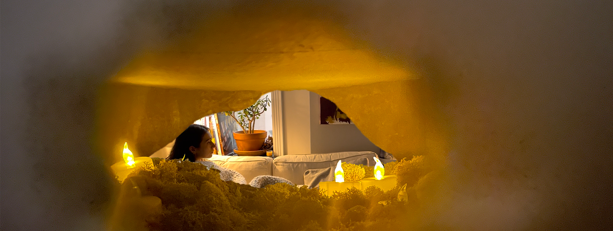
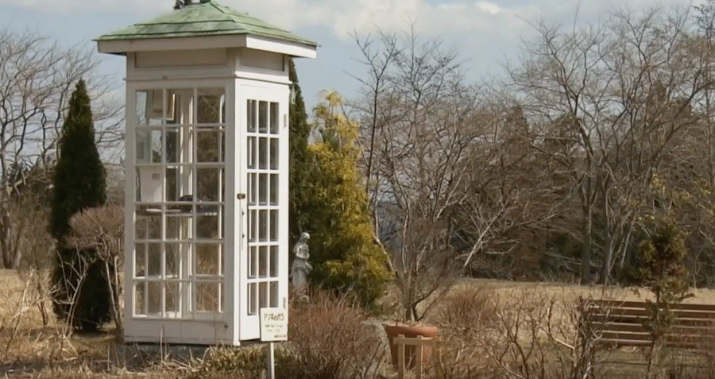
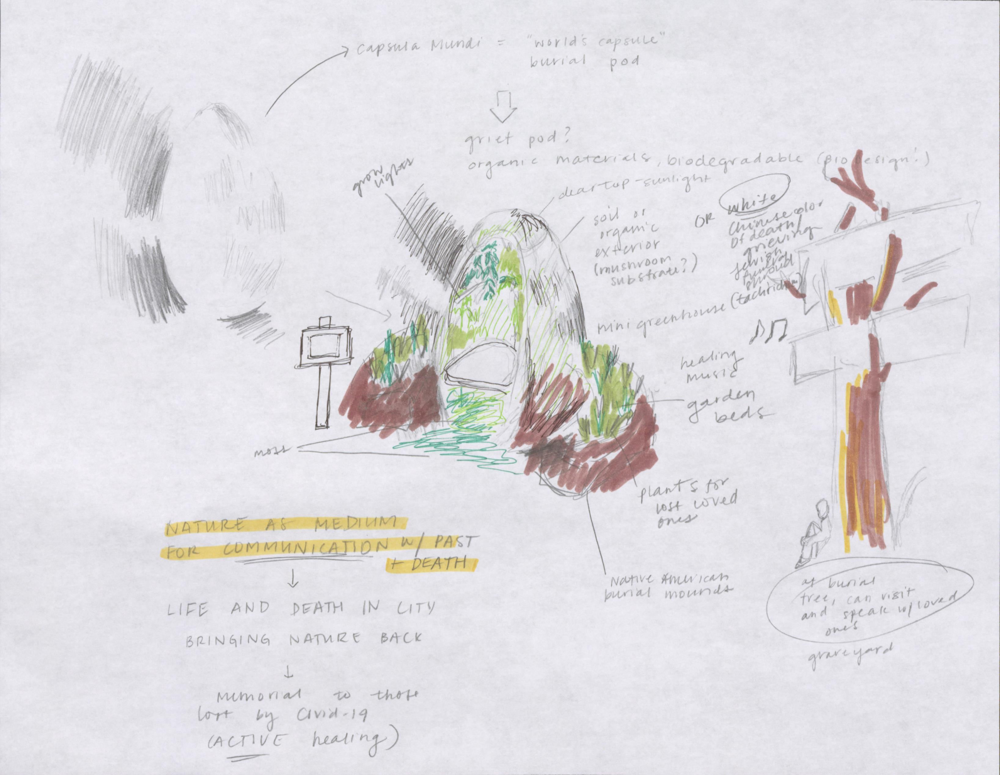
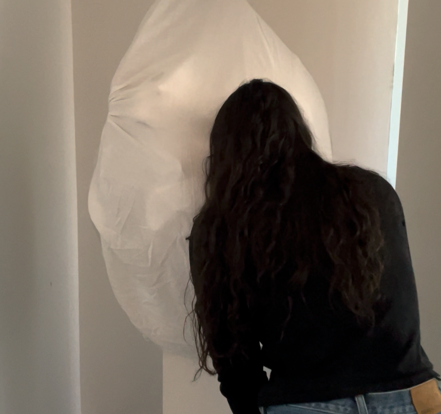

Looking In
Emotocyte: Looking In
2021
Overview
An interactive, sensory manifestation of grief experienced through personal loss and the COVID-19 pandemic.
This project was created for Major Studio I (Interaction Design) at Parsons during the Fall 2021 semester, under the instruction of Harpreet Sareen. We were instructed to pick a topic that was close to us, research it extensively, and create an interactive piece that communicated its purpose clearly. This directive led to an intensely personal, deeply researched, and iterative process.
My project focused on capturing the experience of grief and converting it into a shareable, yet intimate, form.
Emotocyte (/əˈmōˈtəˌsaɪt/). A physical cell or artifact that captures and/or assists in the experience of a certain emotion.
The viewer approaches the central object of this project, an emotocyte. There are no verbal or written directions; viewers are enticed to interact with the object through the simple curiosity of a peephole, which is embedded in the face of the object.
Once the viewer decides to peer through the hole, they are transported into a meditative, botanical space. When they look inside, they are met with the odor of peat and other mosses, the sound of spoken word and a melancholy bass recording, and the sight of flora, a video of a distracted, sad woman, and flickering candle light. The experience is both voyeuristic and touching, a bridge to the internal happenings of someone in grief.
Process

- User research and literature review
- Prototyping
- User testing
- Refinement
1. User Research and Literature Review
This stage consisted of literary research, interviews, focus groups, and A/B testing, in which users assessed both the conceptual quality and visual design of this project.
My research was formed primarily from my personal experience (I lost my grandmother last July and had already been thinking of the emotional toll of the pandemic) and grew when I started engaging with artistic, cultural, and scientific writings. Coming from a background in fine arts, I looked to many artists' conceptions of grief after traumatic events, natural disasters, and personal loss. I also looked towards global grief practices and rituals, finding specific inspiration in the grieving rituals of indigenous peoples across the United States, Jewish religious practices, and Japanese botanical customs. References are embedded, linked, and cited in the full process site.
I interviewed students and faculty in the Design and Technology program at Parsons, strangers in New York city, friends, and family on their experiences with grief. This allowed me to search for qualitative and quantitative patterns of grief, at least among a small population. Interviews can be found in the full process site.
Ultimately, I landed on three main themes: (1) the inclusion of botanical organisms (e.g., condolence flowers at a funeral), (2) the almost compulsory need for personal expression, sometimes with words, sometimes without, and (3) the desire for community in a time of grief.
2. Prototyping
I then translated the patterns and themes from the research stage to physical prototypes. I sketched to get a sense of form, storyboarded this interaction, built physical models, and began prototyping with users.
3. User testing
I had users interact with my prototypes, explain their experience, and provide feedback. The prototypes were low-fidelity, meant to get the conceptual content across and act as a jumping off point for further iteration and refinement.
Originally, I planned to create an immersive, architectural installation, one that visitors could enter, interact with, and examine. Over time and with continuous feedback, this idea got scrapped. With the limited scope and the uncomfortable nature of grief, something smaller scale and more intimate seemed to appeal more to folks who would be interacting with the exhibit.
Throughout the project, I had been attracted to egg- and cocoon-like forms; eggs are found throughout nature, in botanical, mammalian, reptilian, amphibian, and basic cell morphology, in addition to so many other contexts. They are symbols of birth and change, and denote a sense of growth. It seemed fitting for this shape to act as a vessel from one state to another.
4. Refinement
The last stage of this interaction project was focused on physical refinement. This was primarily me quite literally getting my hands dirty. I tested different kinds of peat moss, reindeer moss, and soil, worked on carving and painting cardboard, and refining the video production that was to be included in the piece.
Reflections

The exterior form clearly needs some refinement. Though the general shape was successful, using a more-sculptable, smoother material like ceramic, concrete, or even a mycelium mold would enable me to exercise greater control over the form, the curves of the egg, and how appealing it is for viewers to approach. Though I liked the tactile nature of the cloth exterior, the ridges, folds, and imperfections in the material detracted from the communication of the piece being egg-like.
This project also addressed the needs of a specific demographic at a very specific point in history (young American people, who are currently in the midst of a global pandemic), so I would like to continue addressing their needs more extensively while also researching how this solution could be extended to other portions of the population. A larger sample size, more interviews, and additional research would further refine the direction of this project.
The conceptual nature of this work would also improve with collaboration with other related professionals. For example, if I could work directly with ethnobotanists, architects, and cultural leaders, among others, I believe that the work would reach an even broader audience and have a more significant impact.
Overall, I was pleased with where I left this project at the end of the semester, and I look forward to the ways that it will impact future work!